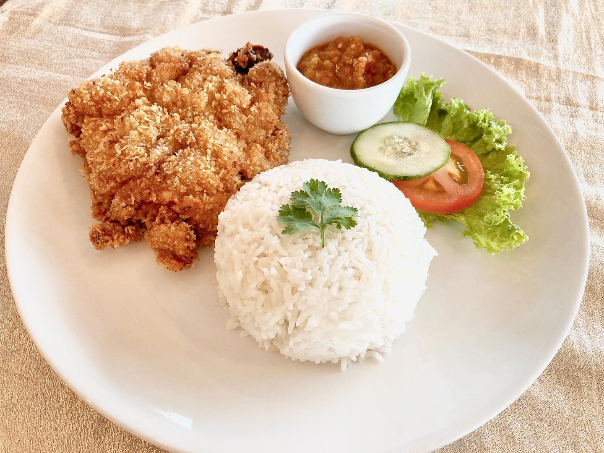

Chicken Chop Rice

Description
Chicken chop rice is a popular dish often found in Southeast Asian cuisine. It features succulent, boneless chicken cutlet that is typically marinated with flavorful spices
and then either grilled, fried, or roasted to achieve a crispy exterior while maintaining juicy, tender meat inside.
This chicken chop can be served together with steamed or fragrant rice, often accompanied by a variety of sides such as vegetables, a fried egg, or pickles. The dish is commonly
garnished with sauces such as black pepper, mushroom, or sweet and savory gravy, adding an extra layer of flavor.
Ingredients
Chicken Chop
- 200 g Wheat Flour
- 13 g Paprika Powder
- 2 1/2 pcs Boneless Chicken Thigh, chop cutting
- Enough Cooking oil
- 50 g Rice Flour
- 1 1/2 tbsp TUMIX® Chicken Stock
- 1 1/2 nos Eggs, beaten
Special Sauce
- 35 g Butter
- 1/8 nos Yellow Onion, cut small dice
- 1/2 tbsp Dark Soy Sauce
- 25 g Wheat Flour
- 1 1/4 cups Water
- 1/2 packet Seri-Aji® Black Pepper Seasoning 38g
Chicken Rice
- 250 g Rice, soaked for 20 minutes and strained
- 2 1/2 cloves Garlic, chopped
- 1/2 stalk Cinnamon
- 1 nos Cardamom
- 1/2 tbsp TUMIX® Chicken Stock
- 1 tbsp Butter
- 1/2 inch Ginger, sliced
- 1/2 pcs Star anise
- 1/2 string Pandan leaf, tie into a knot
- 300 ml Water
Steps
Chicken Chop
- Combine wheat flour, rice flour, paprika powder and 1 tbsp TUMIX® Chicken Stock in a bowl and mix well. Keep aside.
- Marinate chicken with 2 tbsp TUMIX® Chicken Stock for 30 minutes.
- Coat chicken with flour mixture, then coat with beaten eggs and with the flour mixture again.
- Heat up the cooking oil and deep-fry until fully-cooked and crispy.
- Ready to serve with chicken rice and special sauce.
Special Sauce
- Melt 70g butter in a pre-heated pan then add wheat flour. Cook until the mixture turns slightly brown and smells nutty. Keep aside.
- Melt remaining butter and add yellow onion. Stir-fry until brown.
- Add in water and dark soy sauce. Mix well.
- Add the flour mixture, stir well until desired consistency is achieved.
- Add in Seri-Aji® Black Pepper Seasoning and stir well.
- Ready to serve.
Chicken Rice
- Melt the butter on pan, stir-fry garlic, ginger, cinnamon, star anise and cardamom pods until fragrant.
- Add in soaked rice with pandan leaves. Mix well and transfer to rice cooker.
- Pour in water and TUMIX® Chicken Stock and mix well. Turn on the rice cooker.
- Serve with chicken chop and special sauce.